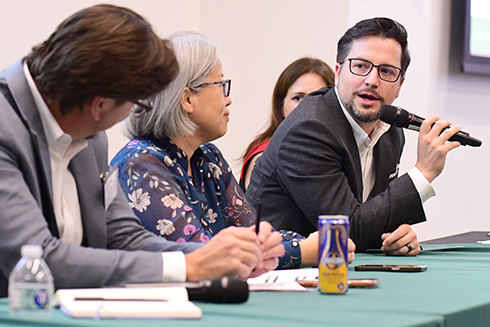

Rethinking augmented reality for children: USF study finds key design gap
Most augmented reality technology is designed for adults, often overlooking how children naturally think and interact. A University of South Florida study found that children ages 9 to 12 engage with AR more physically and intuitively, highlighting the need for child‑centered design in education.

USF Education drives impact at 2026 AI+X Symposium
At the 2026 AI+X Symposium, USF’s College of Education showcased its leadership in AI-driven teaching and learning through research presentations and program leadership. Faculty explored how AI enhances instruction, supports diverse learners and promotes ethical use, reinforcing the college’s role in advancing innovation and preparing educators for an AI-integrated future.

AI+X Symposium brings interdisciplinary AI research and dialogue to USF Research Park
At USF’s third annual AI+X Symposium, industry leaders emphasized that degrees still matter—but AI skills are now essential across disciplines. Featuring expert panels, keynotes and research presentations, the event explored AI’s impact on the workforce, healthcare and society, highlighting adaptability, ethical awareness and innovation as critical to navigating an AI-driven future.
More News >>>